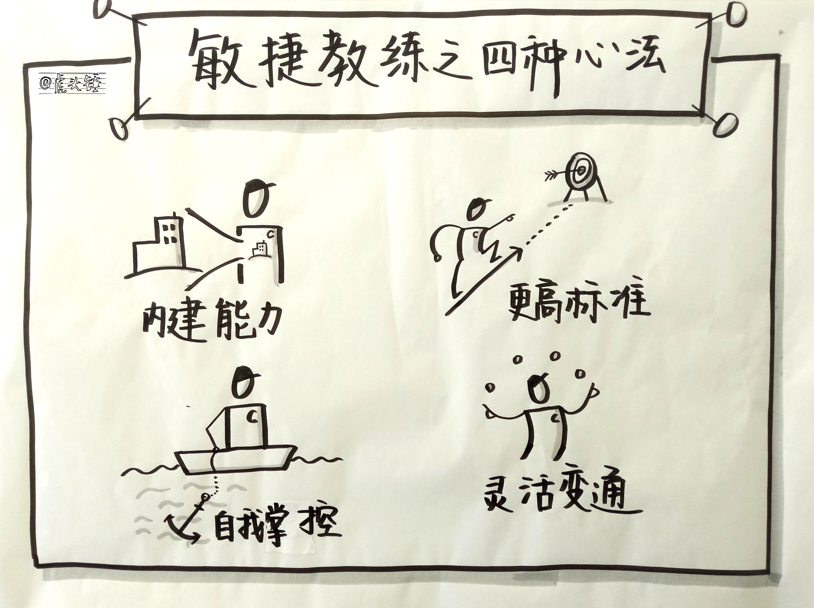
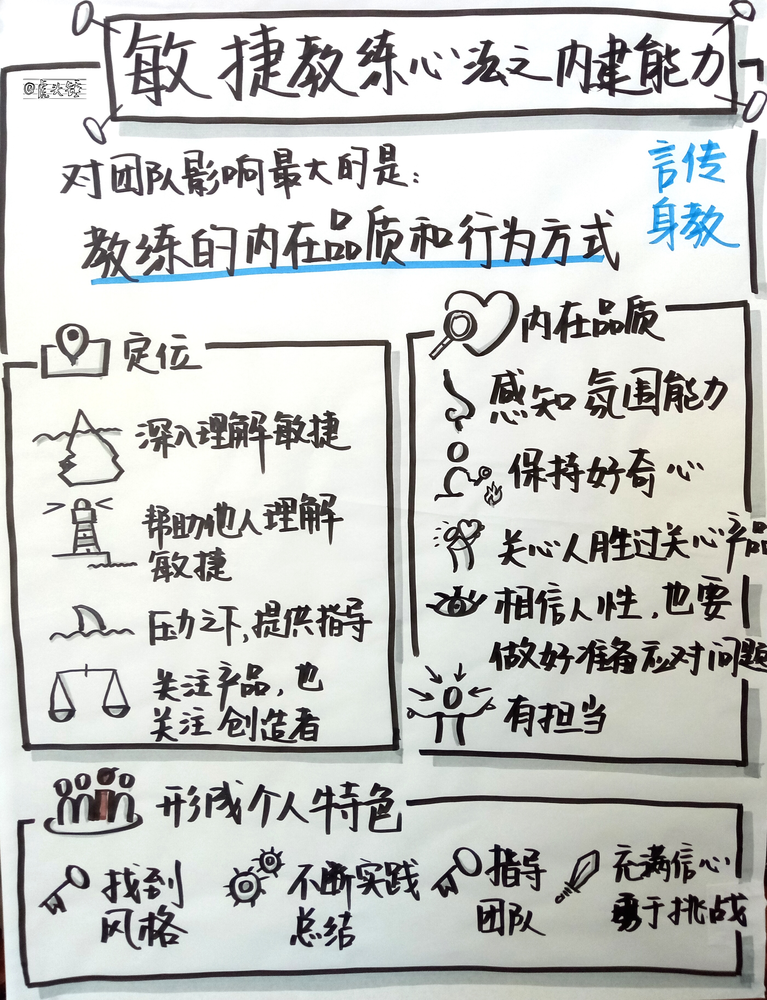
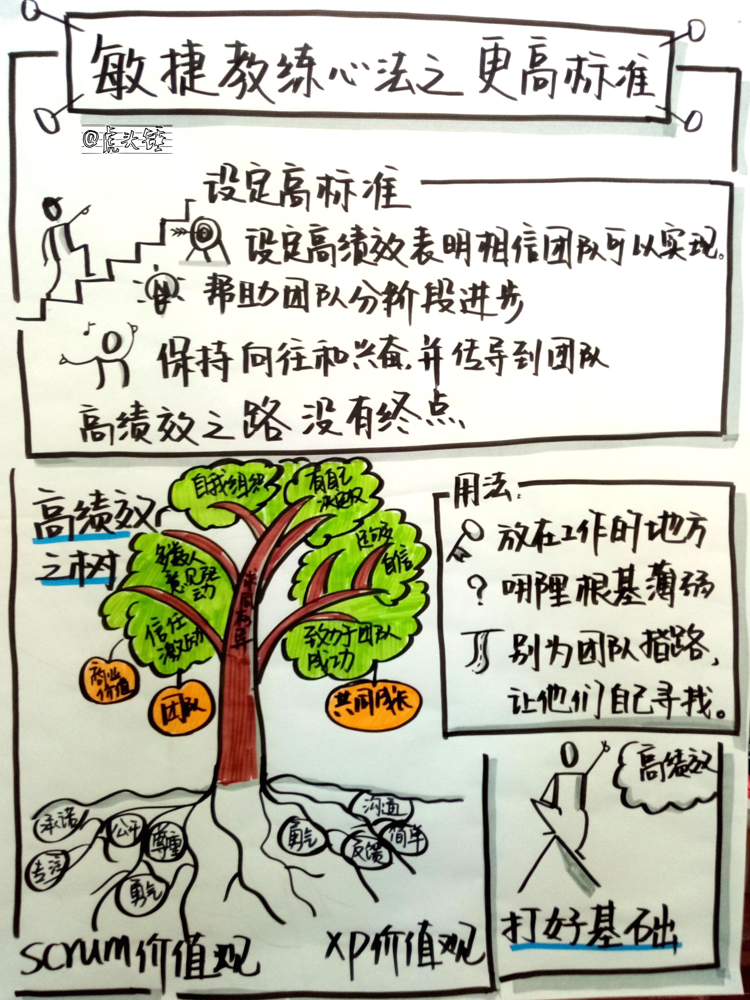
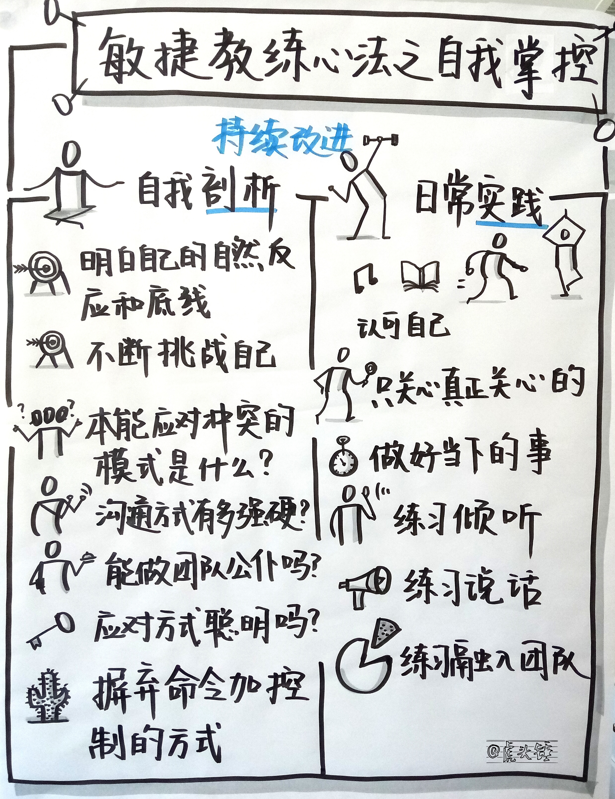
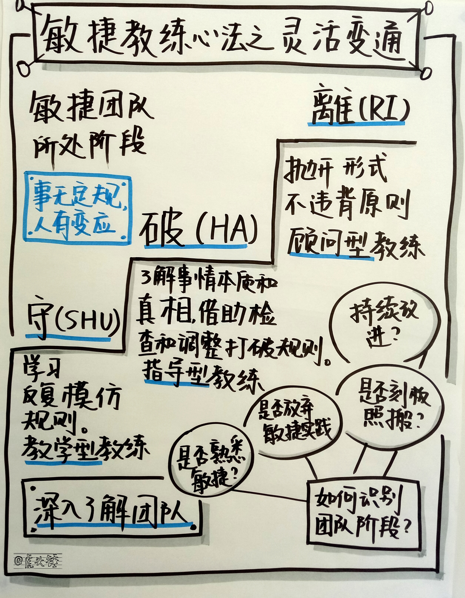

敏捷教练的职责是帮助组织做得更好。为了履行这个职责，首先是做好前面几章介绍的知识储备。其次是运用这些知识影响组织，也就是下一章开始讲的教练的六种方法。在进行教练之前，敏捷教练需要做一些自身的在敏捷知识之上的内在准备，也就是四种心法：
- 内建能力
- 更高标准
- 自我掌控
- 灵活变通

心法一：内建能力
在敏捷开发指导过程中，对团队影响最大的其实是教练本人的内在品质和行为方式，而并非任何外在的具体的技术或者意见。教练的一言一行无不体现出其内在品质和对敏捷主要观念的理解。通过内在品质的体现，可以给个人、团队和组织带来深远而持久的影响，比照本宣科式刻板地执行敏捷思想中的具体的技术有更加深刻的意义。

敏捷教练的定位
- 一个能够准确掌握敏捷开发实践和理论中深层次内容，并且能够帮助团队理解这些内容的人。
- 一个面对过巨大挑战、内部阻力，并且能够在需要时为经理们或者其他团队的人员提供指导的人。
- 一个能够帮助组织内各级管理层去深刻理解有效的敏捷开发能够为日常工作带来哪些好处的人。
- 一个能够从专业辅导、冲突管理、矛盾调解、剧场表演等相关学科中引入新的观点和理论，从而让自己团队的表现不断提升的人。
- 既关注在复杂而又变幻无穷的世界中创造出有意义的产品，也关注为参与创造的人们的职业生涯带来更多益处。
敏捷教练应该克服与改变的方面
对照下面“应该做到的”一起看
- 协调个人对团队的贡献。
- 做一个领域专家。
- 把精力花在追求特定产出上。
- 自己知道所有问题的答案。
- 自己全权管理整个项目。
- 推动。
- 注重截止日期和技术路线的选择。
- 注重行为的最优性。
- 亲自解决问题。
- 工作总能很好地计划，计划总能很好地被实施。
- 项目三要素可以相互调剂和妥协，以应对未知的突发情况。
- 随着需求、设计、开发、测试阶段的推进，可预测性越来越高。
- 准时和在预算内完成目标就是成功。
- 项目的范围可以事先锁定。
- 从头到尾控制整个项目的进程。
- 完成阶段性目标和任务是工作价值的度量。
敏捷教练应该做到的方面
- 指导整个团队进行协作。
- 充当团队的协助员。
- 把精力花在提升团队的整体表现上。
- 让团队自己寻找答案。
- 让团队自己寻找途径。
- 指导。
- 注重商业价值的达成。
- 注重于每时每刻都做有利于业务发展的事情。
- 将问题交予团队。
- 提前计划并不可少，但确定的计划并无用处。
- 时间和预算不变，范围可变。
- 随着时间推移，计划不断被修正，因而越来越准确。
- 客户获得的商业价值是成功的标准。
- 项目范围保持灵活，任何变化都可接受。
- 以团队贯彻敏捷思想来控制进程。
- 可工作的软件才是价值的度量。
敏捷教练的内在品质
- 能够读懂一个房间的空气中蕴含的情绪，并判断出是否一切正常。
- 关心人胜过关心产品，让团队成员感受到自己受到关心，自己的成长得到支持，进而团结一致，创造出卓越的产品。
- 不断培养自己的好奇心，清楚地意识到自己的疑惑在那里，不会主观揣测他人在想什么，及情况形成的原因，而是会如实发问。
- 相信人之初性本善，人的内心总有善良的一面，不过可能被客观情况耽误了，接受他们目前的状况，并尽可能帮助他们成长。
- 不是固执地执行事先制订的计划，而是时刻与团队一起解决新出现的问题。
- 有着学习的渴望，知道自己还需要不断成长和提高。
- 相信只要给予一个大胆的目标和一个成长的环境，任何一组人都能把事情做好。更高的目标值的追求。
- 不容忍人们为不求上进寻找的各种借口。例如：我们一直是这样做的。
- 相信预期之外的情况一定是会出现的，而混乱只是达到更好情况的必经阶段，做好应对混乱的准备。
- 愿意承担犯错的风险。承认错误，承担责任，但不会纠结于此。
形成个人特色
- 找到自己做敏捷教练的独特风格。
- 不断实践和总结。
- 把从本课程中学到的东西用自己的方式消化，然后指导团队。只有自己最熟悉自己周围的环境，也只有自己最了解自己。
- 对环境和自己要充满信心，不偏安一隅，勇于挑战自己，通过指导敏捷开发团队的工作来实现自己的成长和成功。
心法二：更高标准
把高绩效作为自己的期望标准，并帮助团队去实现它，这些都能给你以重要而强大的动力。如果可以随时保持雄心勃勃，那么每个人都能获得最后的胜利。公司或组织不仅获得了更好的成果，还拥有了无所不能的团队。团队及每个成员则获得了更多自主权，掌握了高超的技能并实现了自己的目标。每个人都能从高绩效中受益。

设定高标准：
- 设定高绩效仅仅表明你相信高绩效是可以实现的，你相信团队能够实现这一目标。
- 需要用自己的信心激励团队朝着能共同达到的愿景而努力奋斗。
- 高绩效无关乎是否到达某一特定状态，而是一段通往更高目标的旅程。超越一切合理的期望，甚至对自己的进度感到惊讶，不断保持进步。
- 为帮助团队开启通往高绩效的旅途，需要为团队设定将要实现的目标期望。
- 接下来，指导他们迈出第一步，以及以后的每一步，并一步一步地朝着那鼓舞人心的高绩效的目标前进。
- 你首先需要先让自己产生一种对这段旅途期待向往和兴奋的感觉，然后再把这种感觉传导到整个团队中去。
- 高绩效是没有终点的旅途。
- 一旦开启高绩效之旅，就会有各种各样的障碍出现，团队要为他们能够彻底地快速地从挫折中恢复过来感到自豪。让高绩效成为他们对自己的期望和信心，支撑他们挺过一个又一个难关。
高绩效的隐喻之高绩效树
- 用高绩效树帮助团队描绘高绩效期望的愿景。
- 当出现问题或不足时，将它作为一种研究问题的方法。
高绩效树的树根：Scrum 的价值观
- 承诺：愿意对目标做出承诺，Scrum 会为人们提供兑现承诺所需的所有权限。
- 专注：做好本职工作，把所有精力和技能都专注在自己承诺的工作上，而不要因为任何无关事情分心。
- 公开：Scrum 中与项目有关的所有事情对大家都是公开透明的。
- 尊重：不同的背景和经历塑造出不同的个体，但是有一点很重要，那就是，我们需要对团队中不同的人保持尊重。
- 勇气：要有承诺的勇气、付诸行动的勇气、敞开心扉的勇气和期望得到别人尊重的勇气。
高绩效树的树根：还可以使用 XP 的价值观
- 沟通：只有通过很多实践才能保持正确的沟通，而这些实践又必须通过相互沟通才能完成。
- 简单：做简单并且只需要稍微改动就可以重用的事情。
- 反馈：对系统当前状态的真实地具体地反馈是非常宝贵的。
- 勇气：有勇气去开发高质量的软件，即使这意味着需要删除原有的代码，改变原有的设计方案甚至是延长开发周期。
高绩效树的枝叶：高协作和高绩效团队的特征
- 他们是自我组织起来的，而不是根据角色和头衔来组织的。
- 他们有权做出自己的决定。
- 他们坚信，作为一个团队他们可以解决任何问题。
- 他们致力于追求整个团队的成功，而不是为了个人利益不惜一切代价。
- 他们对他们自己的决定和承诺负责。
- 是信任而不是恐惧和愤怒在激励他们。
- 他们是多数人意见驱动的，并做到求同存异。
- 他们会不断提出富有建设性的反对意见。
高绩效树的果实
- 实现正确的商业价值。
- 更快地实现商业价值。
- 取得惊人的成果。
- 无所不能的团队。
- 团队和个人的成长空间。
高绩效树的用法
- 画在团队工作的地方，默默地提醒团队成员，高绩效是一件很自然的事。
- 当团队遇到麻烦或墨守陈规的时候，指着它说，我们的根系薄弱在哪里？
- 当具备了高绩效团队的特征，产品却不尽人意时，可以说，你们现在想收获什么果实？
- 当以这种方式来使用这棵树时，你的问题就变成了他们的挑战。一旦团队接受了挑战，就离该绩效目标又近了一步。慢慢地，他们就会走出一条属于自己的路。
- 如果一个团队对自己的工作质量感到不满，他们可能是没有做到多数人意见驱动，而过早地采用了第一个出现的可行方案。就在多数人意见驱动上画一个圈。
- 当迭代目标没有完成时，可能是因为分心的事是团队忘记了承诺，团队可以约定，从现在开始，互相帮助，排除干扰，真正全身心投入，完成承诺的工作。
- 最好是别为团队指出一条路，而是让他们去开创一条属于自己的路。
- 当团队把高绩效树当作自己选择的通往高绩效目标的道路时，这棵树就已经在团队中落地生根了。
高绩效的另一比喻：打好基础
- 经验论：从一系列短时间内发生的失败中汲取教训并最终取得成功。
- 自我组织：最了解问题本质的人最清楚该如何解决问题。
- 协作：培养一种“是的，然后呢？”的思维方式。
- 优先级：专注，做优先级最高的那件事。
- 节奏：深呼吸，然后顺其自然。
心法三：自我掌控
个人的自我调节可以促使你成为团队所需的那种教练，但这往往不是一天两天能够做到的事情，而是一个漫长的反复的过程。这里面需要持续的剖析实践和不断地提高改进。

从自我剖析开始
- 明白自己在一些特殊情形的自然反应以及自己的底线，有助于认识自身的现状和将来可能会变成什么样子。
- 下一步是不断挑战自己的极限，不断找到和提升自己的短板。当你很紧张浑身不自在的时候，就是找到自己短板的时候了。
- 在这些情形之下，要有意识和自觉地面对自己的缺点，多花些时间做自我剖析和反思。
- 在这个过程中，还能认识到自己的本能行为，并有意识地在事情发生时选择自己本能或其他不一样的行为。
你本能的冲突应对模式是什么？
- 竞争型：强硬且不配合。
- 合作型：强硬但配合。
- 妥协型：一般强硬和一般配合。
- 顺应型：配合且不强硬。
- 回避型：既不强硬也不配合。
你的沟通方式有多强硬？
- 你是否每天会花些时间静下心来反思自己是如何和他人相处的？
- 你是否记得所有人都有一样的需求？
- 在你每次开口之前，你是否确认过把他人的需求和你的需求看得同等重要？
- 当你让别人做事情时，你是否确认过自己是拜托的语气还是要求的语气？
- 你是否倾向于告诉他人你希望他做的事情，而不是倾向于告诉他人你不希望他做的事情？
- 你是否倾向于告诉他人你希望他采取什么样的行动来帮助他们完成目标，而不是仅仅告诉他人你希望他完成什么样的目标而已？
- 你是否在提出同意或反对他人的意见前，尝试站在他人的立场换位思考一下他人的感受和需求？
- 你是否在说不之前，想过是什么原因导致你不能说是？
- 当你感到沮丧时，是否会问自己问题出在哪里，以及自己应该如何解决，而不是去怨天尤人？
- 当别人做了件令你感到满意和高兴的事情时，你是否对别人表示感谢，且告之具体解决了你哪方面的需求，而不仅仅是一句简简单单的赞扬之辞？
你能做团队的公仆吗？
- 关于怎么培养自己的团队：定要确保优先满足团队成员的最高优先级的需求，你所提供的帮助和服务能够帮助团队成长和发展吗？
- 关于倾听和给他人提意见的权利：自然地在回答任何问题之前先把别人的话听完。
- 关于认可其他人：尊重团队并认可他们取得的每一点进步。
- 服务型教练：帮助团队成员成长和进步，只有团队中的一个个个体变得强大了，整个团队才会强大起来，才会被激发出更多更好更有创意的想法。
你的应对方式聪明吗？
- 你是如何应对矛盾冲突的
- 如何和团队沟通
- 是否做到了服务型教练
- 如何控制自己的情绪反应
摒弃命令加控制的方式
- 不要纠结于结果：给团队足够大的空间去提出最好的想法和开发出最好的产品。
- 把问题留给团队：无论是产品本身还是团队合作上出了问题，解决问题的最佳人选都是团队。
- 充当一面镜子：将自己所观察到的事情，以不夹杂个人意见的方式讲述给自己的团队。
- 留意自己的用词和表情：学习说话时不附加自己的判断，学习无暴力沟通。
- 习惯沉默：习惯那些不舒服的沉默和安静，让团队的其他人有说话的机会。
- 学着不讲情面：不把向来是这么做当作正常。
- 允许团队失败：一起经历失败，并一起从挫折中走出来的团队会比那些一直被保护着的团队更坚强和更高效。
- 做团队最大的粉丝但要谨慎：团队表现得好是因为他们是一个团队，但不要做出空谈式的赞赏。
自我掌控的日常实践
- 听一些可以舒缓心情的音乐。
- 读一些能带来灵感和启发的书、博客、名言警句。
- 慢跑，然后静静聆听大自然的声音。
- 写下三件你很感恩的事情。
- 做做瑜珈或者伸伸懒腰并深呼吸。
- 认可自己，享受当下生活的分分秒秒。
- 将你的电脑密码和你的当下工作联系起来。
只关注你所关心的
- 只关心那些你真正关心的事，放下不必要的焦虑。
- 如果你真正关心的是团队能否针对那些对他们自己有影响的事情发表看法，那么你要做的所有事情，就应该围绕着帮助团队去发表自己看法这个出发点。
- 一个有效的方法帮你弄清楚你真正关心的事情到底是什么，就是寻找这个问题的答案：我怎么才能为团队做出最大的贡献呢？
- 保持关注一件你所关心的事，舍弃很多无关紧要的事。如同产品列表，你只能选择一件你最关心的事作为紧急事项。
- 时刻记住你真正关心的事情是什么，并保持对它的关注。
做好当下的事情
- 面对各种难题和不舒适的环境时，也要管理好自己的情绪，放开自己的心态，控制主观情感，选择最为恰当的应对方式。
- 有时，团队需要你表现得更加直率，这样他们才能看清你对刚刚发生的事情的真实反应。
- 你把团队看作日常工作中所不得不面对的障碍，还是和你一样有希望、梦想、恐惧和志向的人？
- 只要一点点时间，我们就能分辨出我们是否受到敌视，被控制或者被愚弄。我们总能分辨出伪善。真实心意重于应用技巧。
- 把你遇到的人当作活生生的人来看待，这样才能真正扩大自己对团队的影响力。
- 多练习分辨自己对各种突发的自然反应，并熟练应对。通过学习特定的听、说和待人接物的方式，来锻炼自己这方面的技巧。
- 将周围的人都当成活生生的人看待，辅以从这些练习中得来的技巧，你就能很好地控制自己当下的心态了。
练习倾听
层次1：内心收听。非常认真地听着对方的话语，但是听到的每一句话其实都经过自己的重新解读。听到的每一句话其实都在回答自己心中的这个问题：这会如何影响到我自己。而这时回答问题时，往往会专注于展示自己的专业度，而错失了对真正问题的理解。
层次2：专心收听。听者和说者已经建立了切实的联系。听者设身处地地为说话人着想，专注于话语本身。摆脱了自身利益的束缚之后，就能听到问题本身，并据此作出客观无我的回应。或者保持沉默，让说话人能够自由地表达自己的想法。不会主观臆断或者带着自己的利益去片面理解说者的话。保持好奇心，探询问者的情绪。
层次3：全心收听。结合当时环境中的每个因素来真正收听每句话。在层次2中的切实联系仍然很强烈，再加上对每个细节的全面把握，就能对双方谈话的内容产生很多直觉层面的想法。双方都对所谈论的问题有了更深的理解。保持开放的态度，时刻提醒自己：你真的不知道他下一句是什么。
练习说话
- 当你有想说话的冲动时，审视一下自己，你的立场在哪里。为什么你要在此时有这种想法。不要只是为了显示自己是一个聪明人或者希望在团队面前表现自己的价值。你的价值不在此。
- 每次想说话时，确认自己的立场是基于为团队成员考虑。确保你每句话的目的,都是为了帮助他们成为一支更加优秀的团队。
- 不要马上开口。先从1数到10，在数数的时候，密切留意是不是有人说出了与你相同的想法。如果每有人说出你想的，那么再等一会儿，判断一下自己的想法是否仍然和谈话有关，并且是有帮助的。如果是，就简单明了阐述自己的想法。你要相信，谈话总是会沿着参与人的真实需求往下发展的。
- 缄口不言。当团队成员提问时，不要做第一个回答的人。用了这个技巧，你可能根本不用再回答了。当你是提问人时，如果无人回答，这个时候，你最恰当的方式是表现出你其实很安于这种令人不安的沉默。就大大方方坐在那里，不要求他们必须发言，但要维持眼神交流和邀请。总有人会说话。
练习融入团队
- 让自己融入当下，并调整自己的立场。
- 融入当下，意味着此时此刻，你全部的注意力和精力都集中在一处，对此时此刻完全专注，不畏过去，不畏将来。
- 对各种现象不满的杂念极易让人分散精力，使我们偏离于融入团队现在的关注点。
- 但真正融入当下时，就会发现团队当下真正的关注点在哪里，帮助他们用一种更加富有建设性和正面态度的方式成长。
- 通过全神贯注，磨练心智，你会更加关注当下，而且对自我的认识也会更加深入。
- 融入当下，你的立场会更加坚定鲜明。你的话语会清晰无误，你的每句话都会掷地有声。你的介入就能切实为团队作出贡献。
- 融入当下也是团队成员需要发展的一项技能。完完全全关注此时此地，关注其他人，关注目前手上的工作。
- 判断自己说的话是否对团队有益，适时调整立场，甚至撤回自己说的话。
- 不断自我提升，自我修炼，做团队的榜样。
心法四：灵活变通
随着时间的推移，我们会面临不同的环境和不同的团队发展阶段。针对团队的不同阶段，要有不同的做法。灵活变通是敏捷教练的必备。

敏捷团队的发展阶段
- 守的阶段。原封不动地照搬老师所传授的那些招式，没有尝试去理解隐藏在里面的奥秘。一次又一次地反复对着规则模仿。
- 破的阶段。掌握了基本功之后，花时间琢磨所有事情的本质和真相，对功夫有很深层面的理解，而不止是停留在单纯的重复练习上。这时候可以借助检查和调整来打破规则。
- 离的阶段。招数已经融入学生的身体。可以抛开形式，但又不违背原则，甚至体现出更深层次的意义和作用。
- 为了不断超越，我们必须首先完完全全地掌握所有规则，然后才能安全地打破规则，最后创造出新规则。这些新规则不仅遵循隐藏在旧规则里面的原则，还能展现出更深层的意义和作用。
不同阶段的教练风格
- 守的阶段的教练风格：教学型。清楚了解团队的需要，保持坚定的立场和态度，为团队制定规则和纪律。
- 破的阶段的教练风格：指导型。随着团队不断从实践中总结，并将实践转化为自己思想的一部分，就不再是被动地遵从规则。教练可以指导团队对既定规则作出修订。
- 离的阶段的教练风格：顾问型。当团队能够将敏捷开发的实践、价值观和原则融会贯通时，就可以采用顾问型风格了。肯定团队的想法，鼓励他们善于听取别人的意见，善于交流彼此的想法，勇敢地面对各种困难，以及尽可能将事情简化。
- 在每个阶段，都需要深入了解团队，了解每个团队成员，以及整个团队的情况，帮助他们找到适合自己的对敏捷思想的解读。
对团队守破离状态的判断
- 团队对敏捷思想是否比较陌生？
- 团队是否改变或干脆放弃了敏捷开发的实践行为模式，并忘记了这些模式背后所蕴含的思想？
- 团队是否在刻板地照搬敏捷思想中的条目？他们是否能站在个人与集体、所开发产品、客户需求与不断应对变化的角度来思考问题？他们是否能顺畅地进行日常工作，并且从实践中不断获得自我提升？
- 团队是否能够在保持敏捷思想核心价值观和原则的基础上，对自己的实践方式进行持续改进？他们是否能够冲破自己所在公司的某些既定障碍，来让自己的工作更加高效、更加快速地完成目标，获得更高的客户认可？他们是否具备了实现自我监控、自我修正所必需的技能和思想？